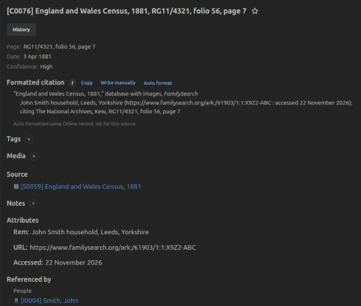
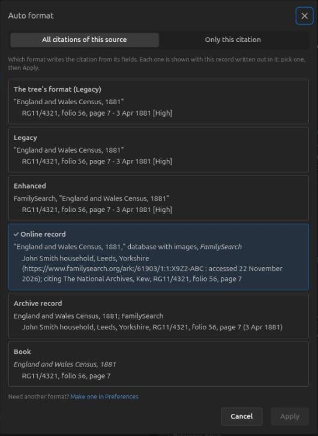
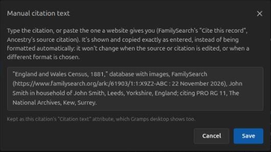
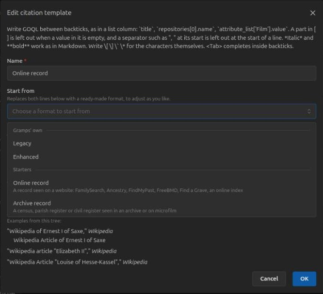
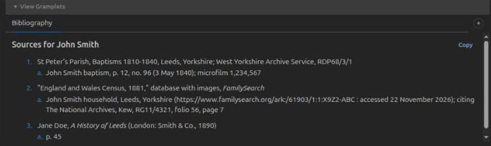

Citing your sources, auto formatted
Every fact in a family tree should say where it came from. A birth date is only as good as the record it was copied from, and a year from now you (or a cousin picking up your research) will want to find that record again and judge how much to trust it. That’s what a citation is for.
Gramps Connect 1.4 makes citations much easier to read and to share. This post explains how, starting with what Gramps means by a source and a citation, in case you’re new to Gramps.
Sources and citations, in two minutes
Gramps, and so Gramps Connect, keeps the “where did this come from” part of your research in three kinds of record:
- A source is the thing you looked in: a census, a parish register, a book, a newspaper, or a database on a website. “England and Wales Census, 1881” is a source.
- A citation is the exact place in that source that supports a fact: this page, this entry, this household. “RG11/4321, folio 56, page 7” is a citation. One source has many citations, one for each record you used from it, and each citation is attached to the person, event or family it supports.
- A repository is where a source is kept: an archive, a library, or a website such as FamilySearch.
Separating them means you type a source’s details once, and each citation only needs what’s different: the page, the date, and how confident you are in it.
Auto formatted
Every citation in Gramps Connect now starts with its Formatted citation: the source and the specific record auto formatted as a reference, the way footnotes in a history book read.

Copy puts it on the clipboard, ready to paste into a story, an email to a cousin, or a footnote in a family history. Titles in italics stay in italics when you paste into a word processor.
The text is written from the details you’ve entered, so it’s always up to date: correct a page number or a date and the citation follows.
Different records, different styles
A census record, a baptism in a parish register and a page in a printed book are usually cited differently, and a website record wants its web address and the date you looked at it. So each source can choose how its citations are written.
Auto format shows every style your tree offers, each with the record you’re looking at already auto formatted in it. Pick one and Apply: every citation of that source now uses it.

Gramps’ own style, Legacy, is the default; Enhanced adds the repository. A single citation can also have a style of its own, for the rare one that needs it. A short line under each citation always says which style it’s using and why.
When a website already wrote it for you
Many websites give you a ready-made citation, like FamilySearch’s “Cite this record”. If you’d rather use theirs, Write manually lets you paste it in. It’s then shown, and copied, exactly as you entered it.

The difference is worth knowing: a manual citation stays exactly as typed, while an automatic one follows every later correction to the source or citation.
Ready-made styles for common records
Beyond Legacy and Enhanced, a tree’s owner can add styles of its own. To make that easy, Gramps Connect comes with five ready-made ones in the layered style genealogists use for source citations:
- Online record: a record seen on a website, such as FamilySearch, Ancestry, FindMyPast, FreeBMD or Find a Grave
- Archive record: a census, parish register or civil register seen in an archive or on microfilm
- Book: a printed book
- Newspaper: an article, in print or in an online archive
- Gravestone: a gravestone or memorial

These styles use a few details Gramps has no box for, like a record’s web address or the date you viewed it. You add those as attributes: a name and a value, such as “Accessed: 22 November 2026”, in the source’s or citation’s Attributes section. The Citations page in the documentation lists which detail goes where.
A bibliography for anyone in your tree
The new Bibliography gramplet (a small add-on from the Gramplet Store, under the Gramplets menu) gathers every source behind the person you’ve selected: their own citations, and those on their events and families. It lists them the way a book’s notes do, each source once with its citations underneath, in each source’s own style, and one Copy for the whole list.

Click a number or letter to jump to that source or citation.
Still your Gramps data
Everything here is stored as ordinary Gramps data. Styles chosen for a source, pasted citations and the extra details are all kept as attributes that Gramps desktop keeps and shows, so nothing is lost if you move between Gramps Connect and Gramps on your computer.
Try it
- The Citations page in the documentation covers every detail. In the app, the (i) next to any Formatted citation opens it.
- Download Gramps Connect 1.4 for Windows, macOS or Linux, or take the narrated tour.
- We’re also asking Gramps users what they call these extra details, so the same names work everywhere. Join in on the Gramps Discourse forum.